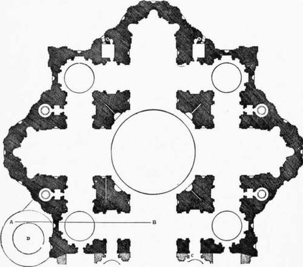
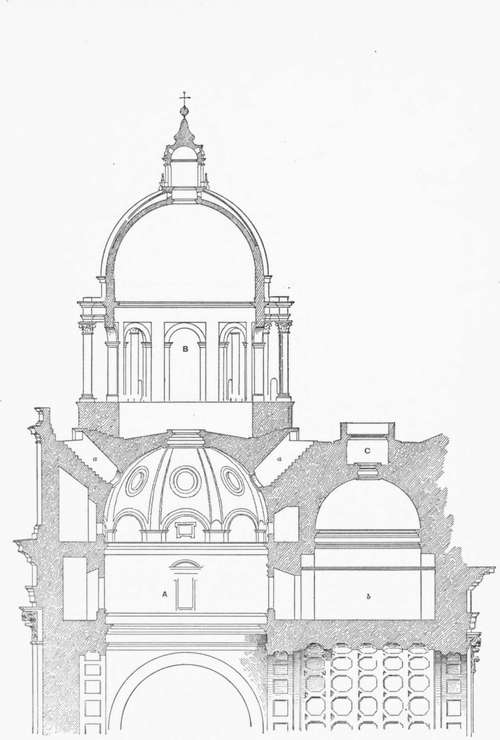

Chapter V. Church Architecture Of The Roman Renaissance
Description
This section is from the book "Character Of Renaissance Architecture", by Charles Herbert Moore. Also available from Amazon: Character of Renaissance Architecture.
Chapter V. Church Architecture Of The Roman Renaissance
As for the rest of the church of St. Peter, we need give attention to that part only which was designed by Michael Angelo on the basis of the original scheme of Bramante, namely, all to the eastward of,1 and including, the first bay west of the crossing. The western bays of the nave as it now stands were, as is well known, added at a later time by the architect Maderna. The plan (Fig. 31) of the earlier part is thoroughly fine, and if the elevation had been made consistent with this plan, St. Peter's might have been one of the noblest monuments in Christendom. But the architects of the Renaissance rarely sought consistency in design; they were prone, from first to last, to mix incongruous elements. The essentially Byzantine plan here adopted could not be carried out in elevation with classic Roman details with a noble result; and the attempt which Michael Angelo made to produce an architectural effect foreign to the real structural system led of necessity, not only to such inconsistencies as are common in Renaissance motives, but to some awkward makeshifts which have not, I believe, been hitherto noticed by writers on this edifice.
Following what appears to have been Bramante's intention, Michael Angelo constructed barrel vaults over the arms of the cross,2 supporting them on piers and arches which had been begun by Bramante. To this simple and reasonable scheme he applied a colossal order of Corinthian pilasters, a pair against each pier, as Alberti had done on a smaller scale at Mantua, and as Bramante appears to have intended in the great piers of the crossing, if not in all of the others. Apart from the superficial and purely ornamental character of the order, and its inappropriateness as ornament in such a system, its exaggerated scale dwarfs the effect of magnitude in the whole interior. The eye naturally estimates this magnitude by the customary proportions of a large classic order, and while these are by no means fixed, there is an approximate mean scale upon which we base our judgment. No beholder on entering St. Peter's can, indeed, fail to be impressed with the unusual size of the order; but he is not apt to realize how far it exceeds the largest orders of antiquity. The order of the Parthenon is about forty-five feet high, and that of the portico of the Pantheon is about sixty feet. These are exceptionally large among the orders of Greek and Roman antiquity,1 but the order of St. Peter's is one hundred feet high.
1 I call the end of the sanctuary "the east end " according to the nomenclature of the usual orientation. St. Peter's, as is well known, does not conform to the general rule which has prevailed since the fifth century.
2 These vaults may have been begun by some of his predecessors. It is impossible to make out how far the building had been actually advanced by them.
Fig. 31. — Plan of St. Peter's, from Fontana.
1 The colossal order of the Temple of the Sun at Baalbek is so unique in scale, and so little known, that it does not influence our general notions of the size of a large classic order.
The lack of due effect of scale in this interior has been often remarked, and it is generally attributed to the great magnitude of the structural parts. The size of these parts could not, however, well be different from what they are. Their magnitude is determined by the scale of the great dome and the width and altitude of the arms of the cross. .The piers of the crossing are masses of masonry measuring on their longer sides more than fifty feet on the pavement, while the pendentive arches are one hundred and fifty feet high, and those of the arms of the cross are seventy-five feet high. But with appropriate treatment their scale might have been made more apparent. To adorn such piers and frame such arches with a classic order is to destroy the proper effect of scale, as well as to violate the true principles of architectural design by using structural members without any structural meaning.
Apart from the barbarism already remarked (p. 29) of springing a vault from a classic entablature, the effect of the gigantic order is unhappy in other respects; the great salience of its cornice cuts off from view the lower part of the vaulting, and this pronounced overhanging ledge, extending around the whole interior, breaks the continuity of the upright lines into the vaulting, and diminishes the effect of altitude.
But not only did Michael Angelo employ this incongruous and ineffective ornamental scheme for the interior of St. Peter's, he also adopted a corresponding design for the exterior which wholly contradicts the real character of the structure and led the architect into some curious makeshifts. For this exterior he used another gigantic order surmounted with an attic story. This obliged him to carry up the enclosing walls of the aisles to a height equal to that of the nave, and led to difficulties within. For the aisle vaulting was now far down below the top of these walls, and it therefore became necessary, unless the space above this vaulting was to be left open to the sky, with the enclosing wall standing as a mere screen answering to nothing behind it,1 to construct a flat roof at the level of the attic cornice. Figure 32, a section through this part of the structure, will explain this and some other awkward expedients to which the architect was driven by the use of this colossal external order. Of the two compartments through which the line AB (plan, Fig. 31) passes, one has a barrel vault and the other a dome, and, as each of the other corresponding parts of the plan are vaulted in the same way, there are four small domes in all. The effect of four smaller domes grouped around the great central one would be happy for both internal and external effect, if they were properly related in proportions, and the scheme were carried out in a structurally consistent and rational way; but such a scheme could not be developed here. For from the level of the aisle arches a dome, even on a proportionately high drum, could not be made to reach the level of the cornice of the enclosing wall unreasonably elevated for the sake of the gigantic external order. But Michael Angelo nevertheless constructed such a dome (A, Fig. 32), although it had to be sunk up to its crown beneath the aisle roof, and then, for external effect, he built another dome over it (B, Fig. 32). To light the lower dome it was necessary to sink oblique openings, a, through the massive masonry of the roof, and to light the useless vaulted chamber, b, which he was obliged to make over the barrel vault of the inner compartment (the crown of which is still farther down below the roof), the well, c, had to be sunk. Thus instead of making a reasonable design with ornamental details appropriate to its structural forms, Michael Angelo first conceived an ornamental scheme consisting of the inappropriate colossal order, and then fitted the building to it, filling up vacant spaces with extravagantly massive solids and useless voids, and resorting to other tortuous devices to piece out a fundamentally irrational system.
1 As it actually does in the western part of the nave built by Maderna.
Fig. 32. —Section of aisle of St. Peter's.
Continue to:
- prev: The Dome Of St. Peter's. Part 5
- Table of Contents
- next: Church Architecture Of The Roman Renaissance. Part 2